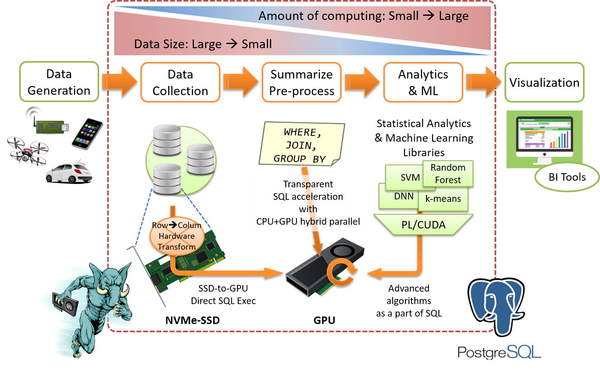

HeteroServerには、データ活用の一連のライフサイクル～蓄積、集計、解析～に必要な全ての機能を搭載されています。従来は管理の煩雑なマルチノード構成が必要であった水準のデータ処理能力を、GPUやNVMe-SSDといった新世代のハードウェアと、その能力を最大限に引き出すソフトウェアとの組合せによって実現しています。 HeteroServer has all the required feature to handle a series of data processing life-cycle; collection, summarize, statistical analytics and machine-learning. It build massive ammount of data processing capability into a single node by utilization of new-generation hardware like GPU or NVMe-SSD and advanced software which pull out maximum capability of the hardware.
データベース管理システムという、まさにデータの集積する中心にGPU/SSDという強力な集計・解析エンジンを増強する事で、大量のデータを動かす事なくその場で計算する事が可能となります。これにより、データベース外での煩雑なデータ管理に費やす時間や費用からユーザを解放し、本質的な課題に集中する事ができるようになります。 Database management system is exactly central location where all the data gather. Enhancement of powerful data processing capability with GPU/SSD enables to handle massive amount of data in the place, without data export. It releases engineers & scientist from cumbersome works and extra cost to manage dataset out of the database system, and allows to focus on their essential jobs.
PG-StromはSQLワークロードをGPUで実行するプログラムを自動生成し、GPUの持つ数千プロセッサコアと数百GB/sのメモリ帯域を活かした超並列処理で、SQLの集計・レポート処理を大幅に高速化します。 PG-Strom automatically generates GPU programs to run SQL workloads, and accelerate SQL's summarizing and reporting workloads notably, using thousands processor cores and hundreds GB/s memory band of GPU.
SSD-to-GPUダイレクトSQL実行機能により、NVMe-SSDデバイスの読み出し速度を理論限界に近い値まで引き上げ、さらにGPUでのSQL実行と組み合わせる事で、I/O中心ワークロードを高速化します。 SSD-to-GPU Direct SQL Execution enables to pull out maximum capability of scan performance of NVMe-SSD device, and cooperates with SQL execution on GPU, to accelerate I/O intensive workloads.
PL/CUDA機能と統計解析・機械学習ライブラリは、GPUを用いて高度なアルゴリズムの並列実行を"データのある場所で"実行する事を可能にします。これはデータ入出力の手間を省くだけではなく、SQLの高度な柔軟性を前処理/後処理に適用できるという事でもあります。 PL/CUDA and statistical analytics and machine-learning library allow to run advanced algorithms in parallel using GPUs on the data location. It is not only skip of data export, but utilization of SQL's flexibility on pre-/post-process of data analytics.
ビジネスインテリジェンス(BI)やレポーティングで多用される集計系SQLワークロードは多数のCPU/GPUコアを使用する並列処理に向いており、ストレージには高いI/Oスループットが要求されます。 HeteroServerはこの種のワークロードに最適化されており、CPU/GPU/SSD全てのハードウェアリソースを駆使する事で高速な集計処理を実現します。 Typical summarizing SQL workloads, often used for business intelligence (BI) or reporting, are suitable for parallel execution by massive CPU/GPU cores and require storage system high I/O throughput. HeteroServer is optimized to this kind of workloads, thus enables rapid summarizing with all the hardware resources like CPU, GPU and SSD.
そのため、従来であれば高額なDWH専用機を導入したりクラスタ構成を組んでいたシステムを、シンプルなPostgreSQLベースの構成で代替する事が可能となり、システムの導入と運用に要する費用を削減する事が可能となります。 Therefore, it allows to replace legacy systems, expensive DWH appliance or cluster based systems people often adopted in the past, by simple PostgreSQL-based solution.
クレジットカードの不正使用や振り込め詐欺など、日々のトランザクションデータの中から犯罪性のある取引を見つけるには、“普段と違う”記録を、なるべく高い頻度で見つけだす必要があります。 We need to find out “anomary” as frequent as possible, to detect criminal transaction, like credit-card skimming or bank transfer scam, from the daily transactional records.
HeteroServerを使えば、データベースに格納されたトランザクションデータに対して、直接、統計解析アルゴリズムに基づいた検査を実行する事ができます。これらのロジックはGPUにより高速に計算する事が可能で、また、In-database処理であるため、計算のたびにデータをエクスポートする必要もありません。 HeteroServer supports to run anomary detection logic based on statistical analysis algorithms directly on the transactional records stores in the database. GPU can process these logic very fast, and no need to export the database for checking because of in-database processing.
| model | HeteroServer S120 | HeteroServer GS120 |
|---|---|---|
| Form | 1U Rack Server | 1U Rack Server |
| CPU | Intel Xeon E5-2650 v4 (2.20GHz, 12C/24HT) x1 | Intel Xeon E5-2650 v4 (2.20GHz, 12C/24HT) x1 |
| GPU | ------ | NVIDIA Tesla P40 (1.3GHz, 3840C, 24GB) x1 |
| RAM | 128GB (DDR4-2400; ECC) | 128GB (DDR4-2400; ECC) |
| SSD | PCIe x8接続 エンタープライズSSD x2 PCIe x8 connected enterprise grade SSD | PCIe x8接続 エンタープライズSSD x2 PCIe x8 connected enterprise grade SSD |
| HDD | 1TB + 3TBx2 (SATA; 72krpm) | 1TB + 3TBx2 (SATA; 72krpm) |
| Software | PostgreSQL v9.6 + NVMe-Strom v2.0 | PostgreSQL v9.6 + PG-Strom v2.0 |
| Features |
|
|
| 価格 Price | お問い合わせ下さい Contact us | お問い合わせ下さい Contact us |
| 発売時期 Expected Release Date | 2018年3月予定 Mar-2018 | 2018年3月予定 Mar-2018 |